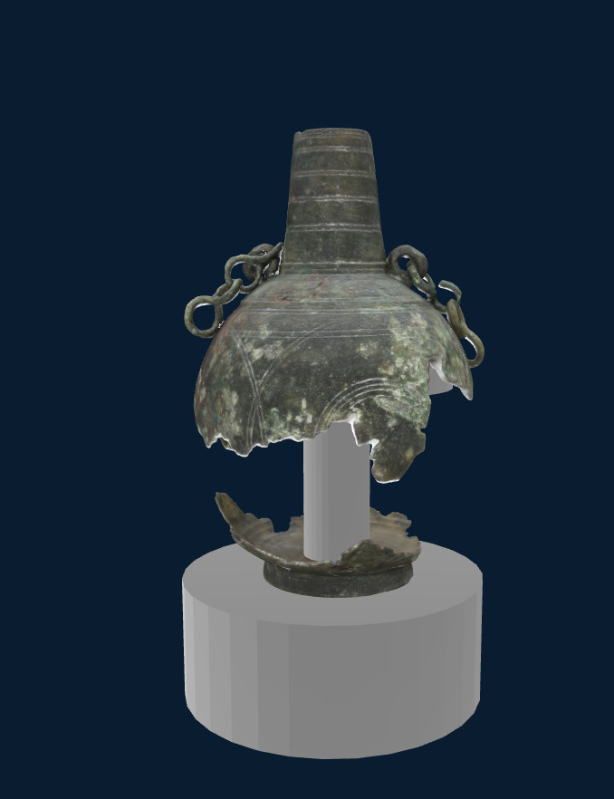
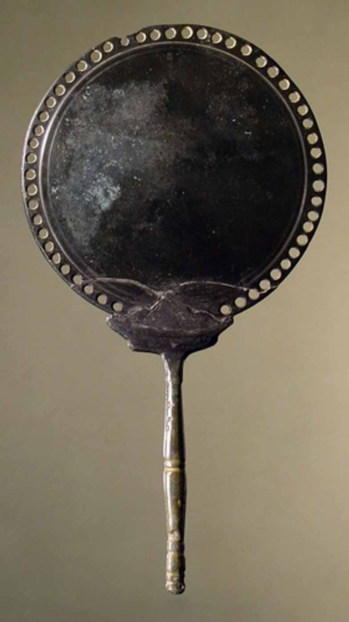
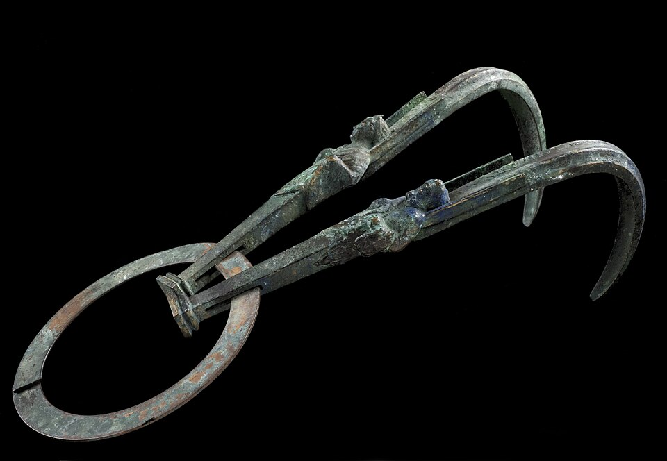

Hygiene und Kosmetik im Vicus Wareswald
Willkommen im Themenbereich „Hygiene und Kosmetik im Vicus Wareswald“
Entdecke, wie sich die Menschen im römischen Vicus Wareswald vor fast 2.000 Jahren pflegten und welche Schönheitsideale sie hatten.
Auf dieser Seite könnt ihr ein originales Fundstück als interaktives 3D-Modell erkunden, mehr über römische Körperpflege und Düfte erfahren und euer Wissen am Ende mit einem kleinen Quiz testen. Scrollt einfach weiter nach unten und entdeckt Schritt für Schritt mehr über Körperpflege im Vicus Wareswald.
Körperpflege im römischen Alltag
Gepflegte Haare, wohlriechende Öle und kunstvolle Frisuren gehören für viele Menschen zur römischen Alltagskultur. Auch im Vicus Wareswald nutzten die Bewohner Gegenstände zur Körperpflege und zum Schmücken. Die hier gefundenen Objekte erzählen vom Alltag vor fast 2.000 Jahren und zeigen, wie weit römische Lebensgewohnheiten auch in den Nordwesten des Reiches gelangten.
Salbgefäß aus dem Wareswald

Ziehe mit der Maus oder dem Finger, um das Salbgefäß von allen Seiten zu betrachten.
Steckbrief
- Objekt
- Salb- und Ölgefäß
- Datierung
- 2.–3. Jh. n. Chr.
- Material
- Bronze
- Fundort
- Vicus Wareswald
- Zustand
- grün-graue Patina, teilweise beschädigt
Körperpflege war in den gallorömischen Provinzen des Römischen Reiches weit mehr als Hygiene. Baden, Einölen der Haut, das Frisieren der Haare und das Auftragen von Düften gehörten für viele Menschen zum Alltag. Ein gepflegtes Äußeres galt als Zeichen von Kultur, Ordnung und sozialem Ansehen.
Archäologische Funde wie Salbgefäße und Haarnadeln zeigen, dass diese Gewohnheiten nicht nur in Rom, sondern auch in kleineren Siedlungen wie dem Vicus Wareswald verbreitet waren. Gut überliefert sind diese Informationen dank einer Art antikem Lexikon, der „Naturgeschichte“ des Plinius aus dem 1. Jh. n. Chr.
Dieses bronzene Gefäß diente zur Aufbewahrung von Salben, Ölen oder wohlriechenden Essenzen. Solche Pflegeprodukte wurden im römischen Alltag zur Körperpflege, für kosmetische Anwendungen und als Duftstoffe verwendet. Das Gefäß weist eine grün-graue Patina sowie deutliche Beschädigungen auf; ein Teil des ursprünglichen Behälters ist verloren gegangen.
Wie rochen die Römer und Römerinnen?
Kleine Salbgefäße – sogenannte Unguentarien – dienten zur Aufbewahrung kostbarer Öle, Salben oder Parfüms. Sie konnten aus Glas oder Keramik bestehen und wurden im Alltag ebenso verwendet wie als Grabbeigaben. Da Duftöle wertvoll waren, reichten meist kleine Mengen aus.
Parfüm bestand aus zwei Hauptbestandteilen: Der erste war eine flüssige Basis mit öliger Konsistenz, die die Duftstoffe konservierte. Sie bestand aus pflanzlichen Ölen, meist Olivenöl, aber auch Sesam- oder Leinöl konnten verwendet werden. Je fetthaltiger das Öl – etwa Mandelöl –, desto länger hielt der Duft. Dieser Basis konnten Konservierungs- und Farbstoffe wie Zinnober oder Orcanetta (eine gelbblühende, behaarte Pflanze) zugesetzt werden.
Der zweite Bestandteil war fest: Pflanzen, Blüten, Wurzeln oder Harze, die dem Öl zugesetzt wurden und die eigentliche Duftnote gaben. Die Bandbreite an Aromen war groß, wobei Rosen besonders hervorstachen. Weitere verwendete Stoffe waren Myrrhe, Zimt, Safran, Narde, Narzissen oder Quitten. Von allen Essenzen blieb jene, die zuletzt hinzugefügt wurde, am stärksten wahrnehmbar und prägte den charakteristischen Duft des Parfüms.
Doch neben den Grunddüften gab es auch für jede Körperstelle ein geeignetes Parfüm. Für die Wangen und das Haar wurde Serpillum (Feldthymian) verwendet, eine ausdauernde Pflanze, deren Duft an Zitrone oder Melisse erinnert. Die Arme parfümierte man mit Wasserminze oder Bohnenkraut, die Beine mit einem ägyptischen Parfüm, die Brust mit einem phönizischen und die Augenbrauen mit einem Lilienparfüm.
Luxus für alle?
Sauberkeit war in allen Gesellschaftsschichten wichtig. Wohlhabende Familien konnten sich jedoch teure Duftöle, exotische Salben oder private Bäder leisten. Menschen mit weniger Geld nutzten einfachere Mittel wie Asche, Pflanzenöle oder Kräuter und besuchten öffentliche Badehäuser.

Sauberes Wasser für die Stadt
Frisches Wasser gelangte über Aquädukte in Brunnen, Thermen und öffentliche Toiletten. Viele Latrinen wurden von fließendem Wasser gespült. Statt Toilettenpapier benutzte man einen Naturschwamm an einem Holzstab, der nach der Benutzung ausgewaschen wurde.
Viele Römerinnen und Römer reinigten ihren Körper nicht mit Seife, sondern mit einer Strigilis – einem gebogenen Schabeisen aus Metall. Nach dem Einölen der Haut wurde das Gemisch aus Öl, Schweiß, Staub und Schmutz mit der Strigilis abgeschabt. Besonders in den öffentlichen Thermen gehörte diese Art der Körperpflege zur täglichen Hygiene und war zugleich ein wichtiger Bestandteil der römischen Badekultur.

Teste dein Wissen!
Wähle eine Antwort aus – du erhältst sofort Rückmeldung.
Übermäßiges Schminken galt bei römischen Männern als besonders angesehen.
Zu viel Schminke wurde bei Männern häufig als Zeichen von Eitelkeit angesehen.
Die Römer putzten ihre Zähne bereits mit Zahnpulver.
Sie verwendeten Zahnpulver aus Kreide, Asche, zerstoßenen Knochen oder Bimsstein.
Woraus bestand römisches Zahnpulver?
Häufig verwendete man Asche und Kreide sowie weitere mineralische Stoffe.
Die Römer benutzten Zahnbürsten aus Kunststoff.
Die Zähne wurden mit Tüchern oder kleinen Holzstäbchen gereinigt.
Was galt im Römischen Reich als besonders schön?
Helle Haut galt als Zeichen von Wohlstand, da sie zeigte, dass man nicht auf den Feldern arbeiten musste.
Für verschiedene Körperstellen verwendeten die Römer unterschiedliche Parfüms.
Antike Autoren beschreiben spezielle Düfte für Haare, Arme oder Augenbrauen.
Salbgefäß und Haarnadel zeigen, dass die Bewohnerinnen und Bewohner des Vicus Wareswald an den Lebensgewohnheiten des Römischen Reiches teilhatten. Körperpflege, Düfte und Badekultur waren nicht nur in den großen Städten verbreitet, sondern gehörten auch in einer kleineren Siedlung wie dem Wareswald zum Alltag.